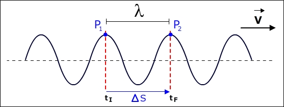
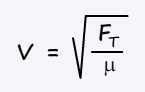

Considere a onda transversal ilustrada abaixo:
O ponto "mais alto" da onda é chamado de crista e o ponto "mais baixo" é chamado de vale. A distância entre duas cristas consecutivas é chamada de comprimento de onda e representado pela letra grega "λ". A rigor, o comprimento de onda é a distância entre dois pontos consecutivos que oscilam em fase.
A distância máxima que cada partícula do meio atinge da sua posição de equilíbrio é chamada de amplitude da onda, representada pela letra "A", e está associada ao valor da energia transportada pela onda.
A velocidade de propagação de uma onda é medida como a distância que uma onda percorre por unidade de tempo. Por exemplo, uma onda sonora se propaga no ar com uma velocidade em torno de 340 m/s. Isso quer dizer que se uma fonte emitir um pulso sonoro, esse pulso levará 3 s para percorre uma distância de 1020 m. Já uma onda eletromagnética se propaga no ar com uma velocidade de aproximadamente 300.000 km/s.
Contudo, é possível expressar a velocidade de uma onda em função do seu comprimento de onda e de sua frequência.
A onda transversal ilustrada na animação abaixo tem uma partícula com uma faixa iluminada. Ao iniciar a animação, essa faixa irá se deslocar solidariamente com a crista da onda, até percorrer uma distância de 1 comprimento de onda. Observe que o intervalo de tempo necessário para que essa distância seja percorrida é igual ao intervalo de tempo para que a partícula "iluminada" execute uma oscilação completa.
Assim, a relação entre a velocidade de propagação da onda (que é a velocidade de deslocamento de uma crista qualquer da onda), o comprimento de onda da onda e frequência da mesma pode ser deduzida da seguinte maneira:
Mas a velocidade de propagação não é determinada nem pela frequência nem pelo comprimento de onda da onda, mas apenas por características do meio. Isso quer dizer que a relação entre esses parâmetros implica no fato de que para uma dada velocidade de propagação de uma onda (que depende apenas das características do meio), quanto maior a frequência, menor o comprimento de onda, e vice-versa.
A velocidade com que uma onda se propaga em determinado meio é determinada pelas propriedades elásticas e inerciais do meio, como densidade e rigidez.
Isso quer dizer que não é nem a frequência da onda e nem o seu comprimento de onda que determinam sua velocidade. Sim, existe uma relação entre esses três parâmetros, mas essa relação implica em dizer que, para uma dada velocidade de propagação de uma onda (que depende apenas das características do meio), quanto maior a frequência, menor o comprimento de onda, e vice-versa.
Vamos estudar o modelo matemático para ondas que se propagam em uma corda. Nesse caso, a velocidade de propagação da onda depende a força de tração a qual a corda está sujeita (FT) e de sua densidade linear(μ).
Demonstra-se, com um esforço algébrico que está além do nosso curso, que:
Onde V é a velocidade de propagação, FT é a força de tração na corda e μ é a densidade linear da corda.
Lembrando da nossa aula no laboratório, onde analisamos o som emitido por uma corda tracionada, onde podíamos alterar a força de tração e o comprimento vibrante da mesma, temos então algumas questões:
Essas, e outras, situações serão explicadas na próxima aula.